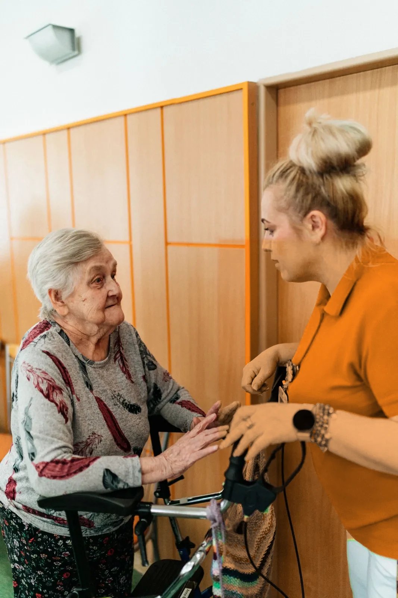
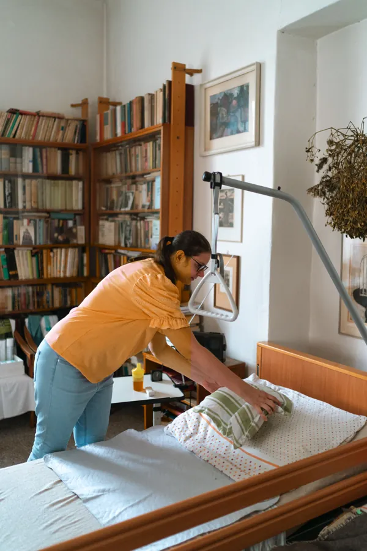
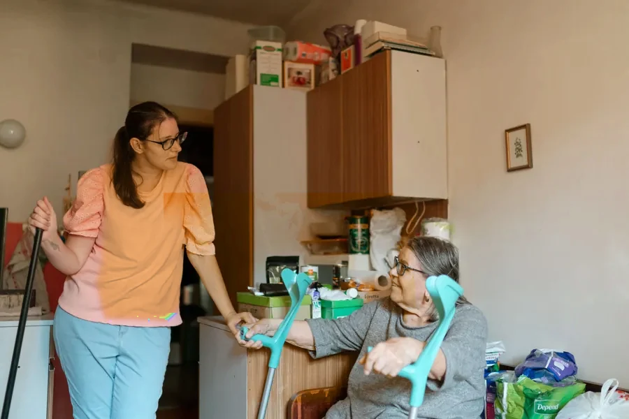
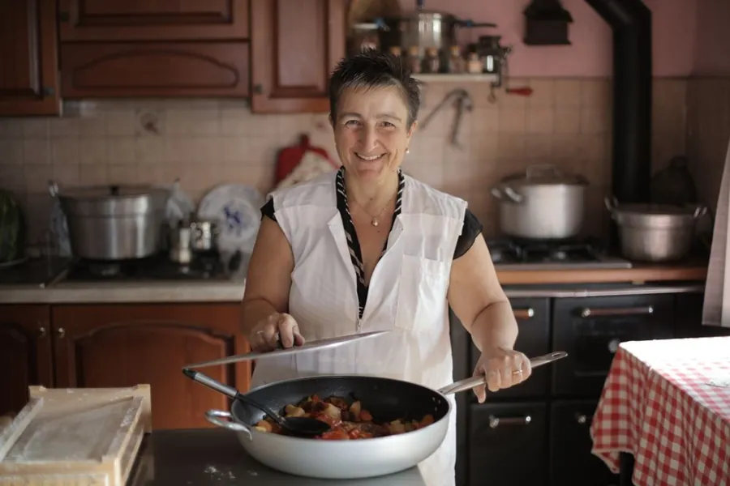
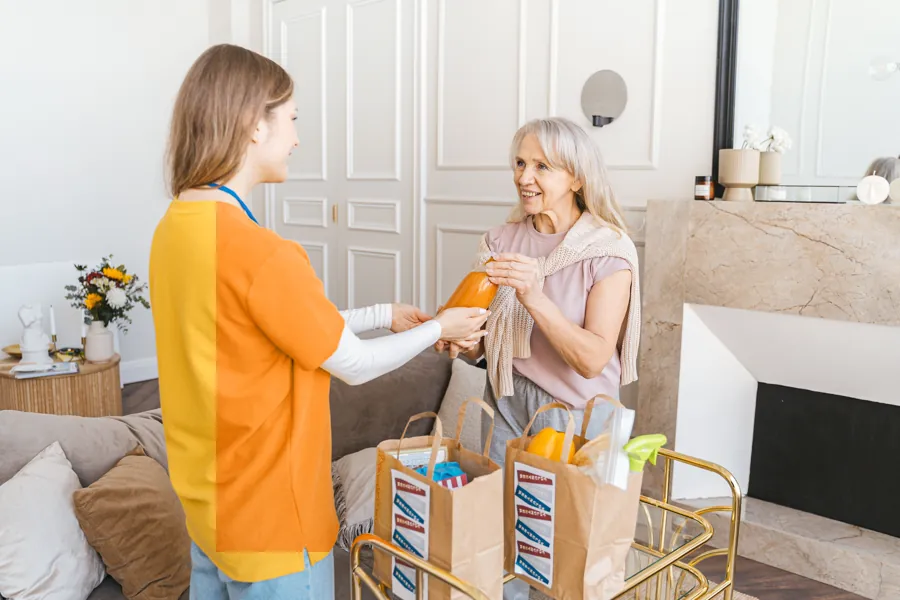
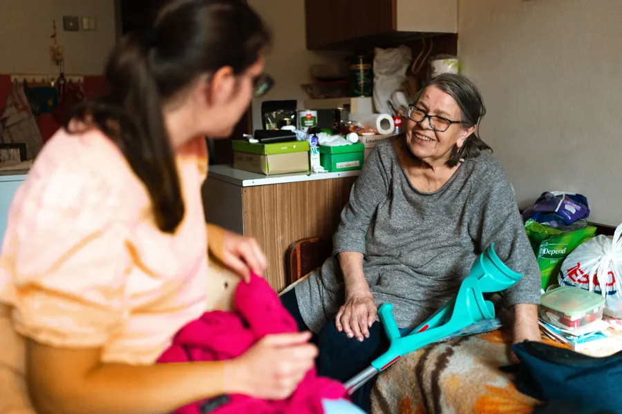
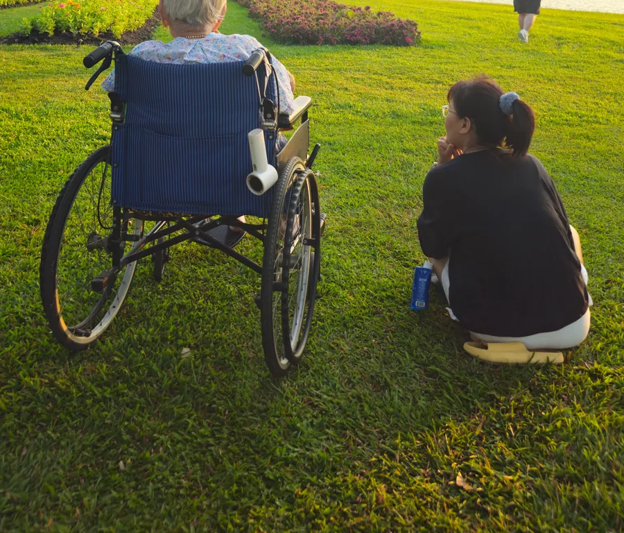
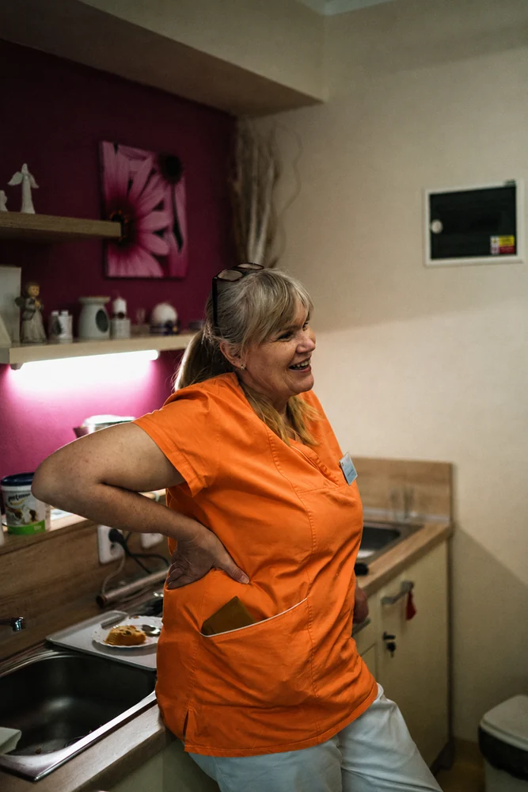
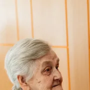

„Endlich jemand, dem ich wirklich vertrauen kann. Meine Mutter (82) freut sich jede Woche auf den Besuch – herzlich und immer dieselbe Person.“
Helga M.Hannover-Südstadt
Professionelle Haushaltshilfe, Alltagshilfe und Seniorenbetreuung für Menschen mit Pflegegrad 1–5. Wir unterstützen Sie zu Hause – mit Herz, Verlässlichkeit und Erfahrung.

Rufen Sie an oder schreiben Sie uns. Wir prüfen kostenlos und unverbindlich Ihren Anspruch auf Unterstützung.
Wir besprechen Ihren Bedarf, klären die Kostenübernahme und übernehmen die Formalitäten mit Ihrer Pflegekasse.
Ihre feste Betreuungskraft startet – zuverlässig, herzlich und genau so, wie es zu Ihrem Alltag passt.
Wir unterstützen Sie umfassend im Alltag – zuverlässig, individuell und mit echtem Engagement für Ihre Selbstständigkeit.

Wohnung, Küche und Bad bleiben sauber und ordentlich – ohne dass Sie sich anstrengen müssen.

Wir begleiten Sie sicher zu Arzt, Apotheke, Amt und anderen wichtigen Terminen.

Frisch gekochte Mahlzeiten nach Ihrem Geschmack – warm und zur richtigen Zeit.

Wir erledigen Ihren Wocheneinkauf, Apothekengänge und alltägliche Besorgungen.

Zeit für ein Gespräch, gemeinsames Spielen oder einfach Zuhören – gegen Einsamkeit.

Gemeinsam an der frischen Luft aktiv bleiben – im eigenen Tempo, sicher begleitet.
Verlässlichkeit, Nähe und klare Konditionen – dafür stehen wir jeden Tag.
Anerkanntes Angebot zur Unterstützung im Alltag – Ihre Kasse übernimmt die Kosten im Rahmen des Pflegegrads.
Keine wechselnden Gesichter: Sie bekommen Ihre vertraute Ansprechpartnerin, die Sie kennt.
Kurze Wege, schnelle Termine und wenig Papierkram – wir kümmern uns um die Formalitäten.
Wir rechnen die Leistungen direkt mit Ihrer Pflegekasse ab – ohne Vorkasse für Sie.
Menschen mit Pflegegrad 1 bis 5 können unsere Leistungen über die Pflegekasse finanzieren – zum Beispiel über den Entlastungsbetrag oder die Verhinderungspflege.
Schon mit Pflegegrad 1 haben Sie Anspruch auf Unterstützung im Alltag. Kleine Handgriffe, die den Tag spürbar leichter machen.
Bei Pflegegrad 2 kombinieren viele unsere Alltagshilfe mit dem Pflegegeld – für mehr Entlastung zu Hause.
Mit Pflegegrad 3 unterstützen wir umfassender – abgestimmt auf Ihren Tagesablauf und Ihre Angehörigen.
Bei Pflegegrad 4 sorgen wir für Struktur und Sicherheit im Alltag und arbeiten eng mit Ihrem Umfeld zusammen.
Auch bei Pflegegrad 5 sind wir eine verlässliche Entlastung – herzlich, geduldig und gut organisiert.
| Leistung | PG 1 | PG 2 | PG 3 | PG 4 | PG 5 |
|---|---|---|---|---|---|
| Entlastungsbetrag§ 45b SGB XI | 131 €/Monat | 131 €/Monat | 131 €/Monat | 131 €/Monat | 131 €/Monat |
| Pflegegeld§ 37 SGB XI | – | 347 €/Monat | 599 €/Monat | 800 €/Monat | 990 €/Monat |
| Verhinderungspflege§ 39 SGB XI | – | 1.685 €/Jahr | 1.685 €/Jahr | 1.685 €/Jahr | 1.685 €/Jahr |
| Pflegehilfsmittel§ 40 SGB XI | 42 €/Monat | 42 €/Monat | 42 €/Monat | 42 €/Monat | 42 €/Monat |
Alle Beträge gemäß SGB XI, Stand: Juli 2026. Angaben ohne Gewähr – die konkrete Höhe hängt von Ihrer individuellen Situation und Pflegekasse ab. Wir beraten Sie gern persönlich.
Wir sind mehr als ein Dienstleister – wir sind ein verlässlicher Partner an Ihrer Seite.
Vereinbart ist vereinbart. Wir kommen zur abgesprochenen Zeit – darauf können Sie sich verlassen.
Kein ständiger Wechsel: Sie bekommen eine feste Ansprechpartnerin, die Sie und Ihren Alltag kennt.
Klare Konditionen ohne versteckte Kosten. Wir rechnen die Leistungen direkt mit der Pflegekasse ab.
Wir sind aus der Region Hannover – wir kennen die Wege, die Orte und die Menschen hier.
Für uns zählt der Mensch. Wir begegnen jedem mit Respekt, Geduld und echter Zuwendung.
Unser Team ist im Umgang mit älteren und pflegebedürftigen Menschen erfahren und geschult.

Wir sind in Hannover und der gesamten Region unterwegs – in allen Stadtteilen und Umlandgemeinden. Kurze Wege, schnelle Termine.

„Jeder Mensch verdient würdevolle Unterstützung in den eigenen vier Wänden – unabhängig von Alter oder Pflegegrad.“
Echte Erfahrungen von Menschen aus der Region Hannover.
„Endlich jemand, dem ich wirklich vertrauen kann. Meine Mutter (82) freut sich jede Woche auf den Besuch – herzlich und immer dieselbe Person.“
„Mit Pflegegrad 2 wusste ich gar nicht, dass mir Unterstützung zusteht. Hier wurde alles mit der Kasse geregelt – ohne Papierkram für mich.“
„Ich lebe allein und bin auf Hilfe angewiesen. Die Betreuung ist für mich fast wie Familie geworden. Sehr zu empfehlen.“

Renate K.Hannover-Linden„Als mein Vater aus dem Krankenhaus kam, ging alles ganz schnell. Zuverlässig, freundlich und wirklich eine große Entlastung.“
„Jede Woche Begleitung zum Arzt und zum Einkaufen – pünktlich und geduldig. Ich fühle mich rundum gut aufgehoben.“
„Nach meinem Sturz kam die Hilfe sofort. Haushalt, Wäsche, Einkäufe – alles wurde übernommen. Ein Segen im Alltag.“
Lassen Sie sich persönlich beraten. Wir melden uns in der Regel innerhalb von 24 Stunden und besprechen gemeinsam, wie wir Sie unterstützen können.
05031 9012340